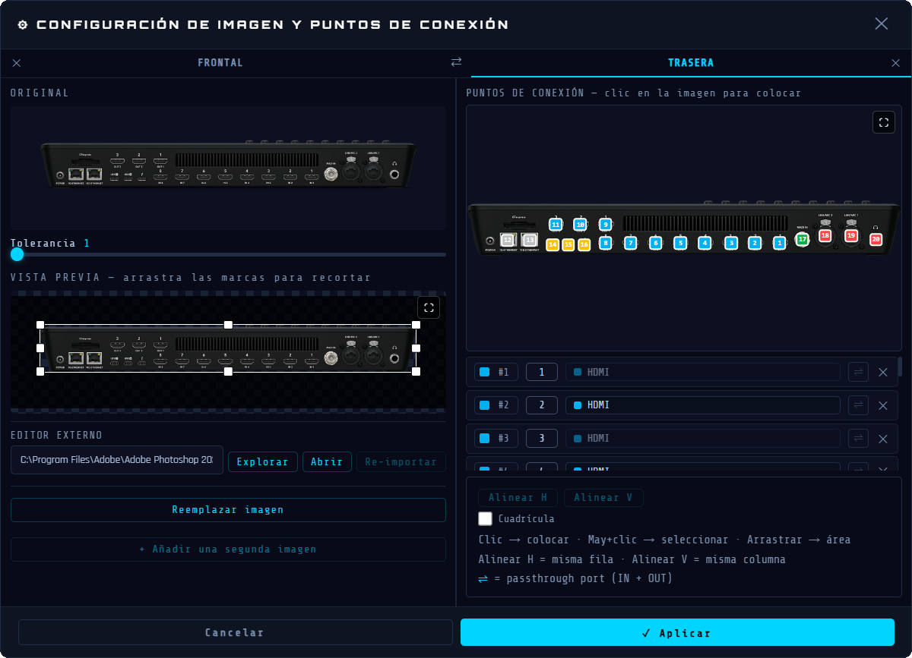

Cree diagramas de cableado claros con equipos reales, puertos reales y rutas de señal animadas.
Dispositivos reales
Trabaja con el equipo que todos reconocen.
Importa fotos de camaras, mezcladores, interfaces, racks y pantallas. Recorta, limpia y coloca puntos de conexion directamente sobre la imagen para que el plano siga siendo legible.

Caminos de senal
Sigue la senal por toda la ruta.
Agrupa cables en una ruta y anima el camino desde la fuente hasta el destino. Es mas facil explicar una cadena, detectar un corte o mostrar como la senal pasa por convertidores, switches y pantallas.
Control
Manten los planos complejos comprensibles.
Usa zonas, categorias, filtros, tipos de cables, colores, etiquetas y minimapa para organizar instalaciones grandes sin perder el contexto tecnico.
Puntos fuertes
Preciso para tecnicos. Claro para todo el equipo.
Imagenes reales de dispositivos
Usa fotos del equipo real en lugar de bloques genericos.
Puertos fisicos
Coloca entradas y salidas exactamente donde estan en el dispositivo.
Rutas animadas
Anima el camino completo de la senal a traves de varios segmentos de cable.
Cables personalizados
Crea y estiliza familias de cables para tu flujo de trabajo.
Zonas y filtros
Aisla rapidamente un rack, una sala, una cadena de camara o un tipo de cable.
Exportaciones interactivas
Comparte un visor HTML, documentos PDF y listas de conexiones.
Desktop offline
Trabaja localmente en Windows o macOS sin depender de la nube.
Tres idiomas
Usa Wires en ingles, frances o espanol.
Usos
Configuraciones diferentes, una misma necesidad: saber por dónde pasa la señal.
Streamers y estudios
Prepara un mapa claro de camaras, capturadoras, mezcladores, ordenadores y pantallas antes del directo.
Iglesias y salas
Mantén alineados a los equipos voluntarios con un mapa legible de camaras, proyectores, interfaces de audio y control.
Salas de conferencia
Documenta equipos instalados, tomas de pared, racks, pantallas y convertidores para simplificar el soporte.
Pequenas producciones
Crea planos reutilizables para eventos, alquileres, salas de formacion y setups broadcast compactos.
Ejemplos en video
Capturas cortas haran evidente el flujo de trabajo.
Estos espacios estan reservados para grabaciones de pantalla del programa real. La idea es mostrar Wires en movimiento, no solo describirlo.
Cable animado
Crea un cable, añádelo a una ruta de señal y lanza la animación para seguir el camino.
Dispositivo y puertos
Añade un dispositivo, ajusta su imagen y coloca los puertos directamente sobre el visual del equipo.
Exportar y compartir
Exporta PDF y un visor HTML interactivo con animacion de senal, descripciones de dispositivos y detalles de rutas de senal.
Contacto
Necesitas ayuda o quieres seguir Wires?
Unete primero a la comunidad, o envia un e-mail para preguntas de licencia y soporte.